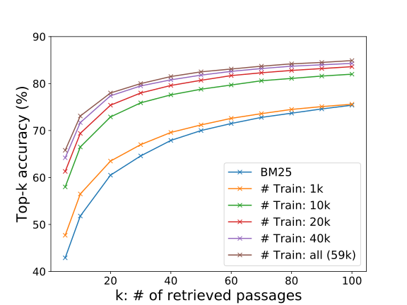

篇首导读
开放域问答的经典两段式是“先检索、再阅读”：检索器从几百万到几十亿篇文档中挑出几十篇候选，阅读器再从候选里抽答案。长期以来，检索这一步由 BM25 这类稀疏词匹配主导——便宜、可解释，但遇到“bad guy”和“villain”这种同义改写就抓瞎。
DPR 用一个很简单的双编码器解决这个问题：问题编码器和文档编码器各自输出一个 768 维向量，用内积算相似度，再用 FAISS 做最大内积搜索。训练只需要“问题–正段落”对，负样本用批内负样本（同批其他问题的正段落）加一个 BM25 硬负样本。结果：top-20 检索准确率比 BM25 高 9–19 个绝对点；端到端 NQ 从 ORQA 的 33.3 提到 41.5 EM。
怎么读：抓住 3.1 的双编码器和 3.2 的损失/批内负样本；Table 2 看检索质量，Table 3 看训练方案消融，Table 4 看端到端 QA。附录 A–D 是正样本选择、相似度/损失消融、定性例子和联合训练，可以按兴趣读。
术语卡
完整术语表 →- Open-domain QA 开放域问答
- 不给定候选文档，系统要在整个大语料（如 Wikipedia）里找到答案片段。通常拆成检索 + 阅读两阶段。
- Passage Retrieval 段落检索
- 从大规模文档库中找出与问题最相关的若干段落。检索质量通常用 top-k accuracy 衡量。
- Sparse Retrieval / BM25 稀疏检索 / BM25
- 用词项匹配和倒排索引打分，代表作是 BM25。对精确关键词敏感，但难以处理同义改写。
- Dense Retrieval 稠密检索
- 把问题和段落编码成低维连续向量，用向量相似度检索。语义相近但词不同的文本也能匹配。
- Dual-encoder / Bi-encoder 双编码器
- 问题、段落各用一个编码器，分别得到向量，再用内积/余弦算相似度。文档向量可以离线预计算。
- In-batch Negatives 批内负样本
- 一个 batch 里 B 个问题各有正段落；把其他问题的正段落当作当前问题的负样本，一次得到 B² 个训练对。
- Hard Negative 硬负样本
- 与问题词重叠高、但不包含答案的段落（如 BM25 高分段落）。比随机负样本更能教会模型区分。
- Top-k Accuracy Top-k 准确率
- 检索返回的前 k 篇段落中至少有一篇包含答案的问题比例。DPR 常用 top-20、top-100。
- Exact Match (EM) 精确匹配
- 预测答案与参考答案（经简单归一化后）完全一致的比例。开放域 QA 的常用指标。
摘要与引言
开放域问答依赖高效的段落检索来选取候选上下文，传统稀疏向量空间模型（如 TF-IDF、BM25）是事实上的标准方法。在这项工作中，我们证明：只用稠密表示也能实际实现检索。嵌入可以用一个简单的双编码器框架，从少量问题和段落中学习。在广泛的开放域 QA 数据集上评估时，我们的稠密检索器在 top-20 段落检索准确率上大幅超过强 Lucene-BM25 系统 9%–19%（绝对值），并帮助端到端 QA 系统在多个开放域 QA 基准上建立新的 SOTA。代码和训练好的模型已开源于 facebookresearch/DPR。
开放域问答（QA）是用大规模文档集合回答事实型问题的任务。早期 QA 系统往往很复杂，包含多个组件；阅读理解模型的进步则提示了一个大大简化的两阶段框架：（1）上下文检索器先选出一个小候选段落集合，其中一些包含答案；（2）机器阅读器再仔细检查检索到的上下文，找出正确答案。把开放域 QA 归约为机器阅读是合理的策略，但实践中常观察到巨大的性能下降（例如 SQuAD v1.1 的 EM 从 80% 以上掉到 40% 以下），说明检索需要改进。
开放域 QA 中的检索通常用 TF-IDF 或 BM25 实现：用倒排索引高效匹配关键词，可以看作把问题和上下文表示成高维稀疏向量。相反，稠密、潜在语义编码在设计上与稀疏表示互补。例如，由完全不同 token 组成的同义词或改写，仍可能映射到相近的向量。考虑问题 “Who is the bad guy in lord of the rings?”，上下文 “Sala Baker is best known for portraying the villain Sauron in the Lord of the Rings trilogy.” 可以回答它。基于词项的系统很难检索到这样的上下文，而稠密检索系统能更好地把 “bad guy” 与 “villain” 匹配起来，取回正确上下文。稠密编码还可以通过调整嵌入函数来学习，为任务专用表示提供额外灵活性。借助特殊的内存数据结构和索引方案，检索可以用最大内积搜索（MIPS）算法高效完成。
然而，人们普遍认为，学习好的稠密向量表示需要大量带标注的问题–上下文对。因此，在 ORQA 之前，稠密检索方法从未在开放域 QA 上被证明能超过 TF-IDF/BM25。ORQA 提出了一个复杂的逆完形填空任务（ICT）目标：预测包含被掩码句子的块，作为额外预训练；然后用问题–答案对联合微调问题编码器和阅读器。ORQA 成功证明稠密检索可以超过 BM25，并在多个开放域 QA 数据集上创造新 SOTA，但它有两个弱点：第一，ICT 预训练计算密集，而且常规句子是否是好问题的替代品并不完全清楚；第二，上下文编码器没有用问题–答案对微调，对应表示可能不是最优。
本文要回答：只用问题–段落（或答案）对，不做额外预训练，能否训练出更好的稠密嵌入模型？利用现成的 BERT 预训练模型和双编码器架构，我们专注于用相对少量的问题–段落对设计正确的训练方案。通过一系列仔细的消融，最终方案简单得令人意外：优化嵌入，使问题与相关段落向量的内积最大，目标函数比较一个 batch 内所有问题–段落对。我们的 Dense Passage Retriever（DPR）异常强：不仅大幅超过 BM25（top-5 准确率 65.2% vs 42.9%），而且在开放 Natural Questions 设置下，端到端 QA 准确率比 ORQA 大幅提升（41.5% vs 33.3%）。
我们的贡献有两点。第一，证明在正确的训练设置下，只需在现有问题–段落对上微调问题和段落编码器，就足以大幅超过 BM25；经验结果还表明，额外的预训练可能并不需要。第二，验证在开放域问答中，更高的检索精度确实转化为更高的端到端 QA 准确率。把现代阅读器模型应用到 top 检索段落上，我们在开放检索设置下的多个 QA 数据集上取得与复杂得多的系统相当或更好的结果。
查看本节英文原文（节选）
Open-domain question answering relies on efficient passage retrieval to select candidate contexts, where traditional sparse vector space models, such as TF-IDF or BM25, are the de facto method. In this work, we show that retrieval can be practically implemented using dense representations alone, where embeddings are learned from a small number of questions and passages by a simple dual-encoder framework. When evaluated on a wide range of open-domain QA datasets, our dense retriever outperforms a strong Lucene-BM25 system greatly by 9%-19% absolute in terms of top-20 passage retrieval accuracy, and helps our end-to-end QA system establish new state-of-the-art on multiple open-domain QA benchmarks.
In this paper, we address the question: can we train a better dense embedding model using only pairs of questions and passages (or answers), without additional pretraining? By leveraging the now standard BERT pretrained model and a dual-encoder architecture, we focus on developing the right training scheme using a relatively small number of question and passage pairs. Through a series of careful ablation studies, our final solution is surprisingly simple: the embedding is optimized for maximizing inner products of the question and relevant passage vectors, with an objective comparing all pairs of questions and passages in a batch.
Our contributions are twofold. First, we demonstrate that with the proper training setup, simply fine-tuning the question and passage encoders on existing question-passage pairs is sufficient to greatly outperform BM25. Our empirical results also suggest that additional pretraining may not be needed. Second, we verify that, in the context of open-domain question answering, a higher retrieval precision indeed translates to a higher end-to-end QA accuracy.
问题设定
本文研究的开放域 QA 可以描述为：给定一个事实型问题，比如 “Who first voiced Meg on Family Guy?” 或 “Where was the 8th Dalai Lama born?”，系统要用一个覆盖多样主题的大语料回答。更具体地说，我们假设抽取式 QA设置：答案限定为语料中一个或多个段落里出现的片段。
假设语料包含 D 篇文档 d1, …, dD。我们先把每篇文档切成等长文本段落作为基本检索单元，得到 M 个段落 C = {p1, …, pM}，每个段落 pi 是 token 序列 w(i)1, …, w(i)|pi|。给定问题 q，任务是从某个段落 pi 中找出能回答问题的片段 w(i)s, …, w(i)e。注意，为了覆盖广泛领域，语料规模可以轻松从数百万文档（如 Wikipedia）到数十亿（如整个 Web）。因此，任何开放域 QA 系统都需要一个高效检索器，在阅读器抽取答案之前选出小规模相关文本。
形式化地说，检索器 R: (q, C) → CF 是一个函数，输入问题 q 和语料 C，返回小得多的过滤文本集合 CF ⊂ C，其中 |CF| = k ≪ |C|。对于固定 k，检索器可以单独用 top-k 检索准确率评估：CF 包含能回答问题片段的那些问题的比例。
查看本节英文原文（节选）
The problem of open-domain QA studied in this paper can be described as follows. Given a factoid question, such as “Who first voiced Meg on Family Guy?” or “Where was the 8th Dalai Lama born?”, a system is required to answer it using a large corpus of diversified topics. More specifically, we assume the extractive QA setting, in which the answer is restricted to a span appearing in one or more passages in the corpus.
Formally speaking, a retriever R : (q, C) → CF is a function that takes as input a question q and a corpus C and returns a much smaller filter set of texts CF ⊂ C, where |CF| = k ≪ |C|. For a fixed k, a retriever can be evaluated in isolation on top-k retrieval accuracy, which is the fraction of questions for which CF contains a span that answers the question.
DPR 模型
给定 M 个文本段落，DPR 的目标是把所有段落索引到一个低维连续空间，以便运行时高效检索与输入问题最相关的前 k 个段落。注意 M 可能非常大（实验中是 2100 万段），而 k 通常很小，比如 20–100。
双编码器与相似度
DPR 使用稠密编码器 EP(·) 把任意文本段落映射成 d 维实值向量，并为所有 M 个段落构建索引。运行时，DPR 用另一个编码器 EQ(·) 把输入问题映射成 d 维向量，检索向量与问题向量最接近的 k 个段落。我们用向量点积定义问题与段落的相似度：
虽然存在更有表现力的相似度模型（如多层交叉注意力网络），但相似度函数必须可分解，才能预先计算所有段落的表示。大多数可分解相似度函数都是欧氏距离（L2）的某种变换：例如单位向量下余弦等价于内积，马氏距离等价于变换空间中的 L2。内积搜索已被广泛研究和应用，也与余弦相似度、L2 距离有联系。消融实验发现其他相似度函数表现相当，因此我们选择更简单的内积，把精力放在学习更好的编码器上。
原则上问题和段落编码器可以是任意神经网络；本工作中我们使用两个独立的 BERT（base, uncased）网络，取 [CLS] token 的表示作为输出，因此 d = 768。
推理时，我们对所有段落应用段落编码器 EP，并用 FAISS 离线建立索引。FAISS 是一个极其高效的开源相似度搜索和稠密向量聚类库，可以轻松扩展到数十亿向量。运行时给定问题 q，计算嵌入 vq = EQ(q)，检索嵌入最接近 vq 的 top-k 段落。

训练目标与负样本
训练编码器，使点积相似度（Eq. 1）成为好的检索排序函数，本质上是一个度量学习问题。目标是通过学习更好的嵌入函数，构造一个向量空间，使相关的问题–段落对距离更小（相似度更高），不相关的距离更大。
令 D = {⟨qi, p+i, p−i,1, …, p−i,n⟩}mi=1 为训练数据，每个实例包含一个问题 qi、一个相关（正）段落 p+i，以及 n 个不相关（负）段落 p−i,j。我们优化正段落的负对数似然：
检索问题中，正样本通常是显式给出的，负样本则要从极大的池子里选。例如，问答数据集可能给出与问题相关的段落，或者可以通过答案找到。语料中其他所有段落虽然没被显式标注，但默认可以视为不相关。实践中，如何选负样本常被忽视，却可能决定编码器质量。我们考虑三种负样本：
- 随机负样本：语料中任意随机段落；
- BM25 负样本：BM25 返回的高分段落，但不包含答案、且与问题 token 匹配最多；
- 金标负样本：训练集中其他问题对应的正段落。
第 5.2 节会讨论不同负样本和训练方案的影响。最佳模型使用同一 mini-batch 中的金标段落，外加一个 BM25 负样本。特别地，把同一 batch 中的金标段落复用为负样本，既能让计算高效，又能取得很好的性能。
假设一个 mini-batch 有 B 个问题，每个问题关联一个相关段落。令 Q 和 P 分别为 batch 内问题和段落嵌入组成的 B×d 矩阵。S = QPT 是 B×B 的相似度矩阵，每一行对应一个问题与 B 个段落的配对。这样我们复用计算，每个 batch 有效训练 B² 个 (qi, pj) 对：当 i = j 时是正样本，否则是负样本。每个 batch 因此产生 B 个训练实例，每个问题有 B−1 个负段落。
批内负样本技巧此前已在全 batch 设置和 mini-batch 设置中使用，被证明是学习双编码器、增加训练样本数量的有效策略。
查看本节英文原文（节选）
Our dense passage retriever (DPR) uses a dense encoder EP(·) which maps any text passage to a d-dimensional real-valued vectors and builds an index for all the M passages that we will use for retrieval. At run-time, DPR applies a different encoder EQ(·) that maps the input question to a d-dimensional vector, and retrieves k passages of which vectors are the closest to the question vector. We define the similarity between the question and the passage using the dot product of their vectors: sim(q, p) = EQ(q)TEP(p).
Let D = {⟨qi, p+i, p−i,1, …, p−i,n⟩}mi=1 be the training data that consists of m instances. Each instance contains one question qi and one relevant (positive) passage p+i, along with n irrelevant (negative) passages p−i,j. We optimize the loss function as the negative log likelihood of the positive passage.
For retrieval problems, it is often the case that positive examples are available explicitly, while negative examples need to be selected from an extremely large pool. In practice, how to select negative examples is often overlooked but could be decisive for learning a high-quality encoder. We consider three different types of negatives: random, BM25, and gold passages from other questions.
Assume that we have B questions in a mini-batch and each one is associated with a relevant passage. Let Q and P be the (B × d) matrix of question and passage embeddings in a batch of size B. S = QPT is a (B × B) matrix of similarity scores, where each row of which corresponds to a question, paired with B passages. In this way, we reuse computation and effectively train on B² (qi, pj) question/passage pairs in each batch.
实验设置
沿用 Lee 等人，我们使用 2018 年 12 月 20 日的英文 Wikipedia dump 作为回答问题的源文档。先应用 DrQA 发布的预处理代码，从 dump 中提取干净的正文部分，去掉表格、信息框、列表等半结构化数据，以及消歧页。然后把每篇文章切成多个不重叠的 100 词文本块作为段落，最终得到 21,015,324 个段落。每个段落前面加上所在 Wikipedia 文章的标题，以及一个 [SEP] token。
我们使用与先前工作相同的五个 QA 数据集和训练/开发/测试划分：
- Natural Questions（NQ）：问题来自真实 Google 搜索查询，答案是标注者在 Wikipedia 文章中找出的片段。
- TriviaQA：一组 trivia 问题，答案最初从 Web 抓取。
- WebQuestions（WQ）：用 Google Suggest API 选出的问题，答案是 Freebase 中的实体。
- CuratedTREC（TREC）：问题来自 TREC QA 赛道和多种 Web 来源，面向非结构化语料的开放域 QA。
- SQuAD v1.1：流行的阅读理解基准；标注者看到 Wikipedia 段落后再写问题。由于问题依赖给定段落，它并不是理想的开放域 QA 数据，但为了与先前工作公平比较，仍纳入实验。
由于 TREC、WebQuestions、TriviaQA 只提供问题–答案对，我们把 BM25 排名最高且包含答案的段落作为正段落；如果 top-100 检索段落都没有答案，就丢弃该问题。对于 SQuAD 和 NQ，原始段落的分割和处理方式与候选池不同，我们把每个金标段落匹配并替换为候选池中对应的段落；由于 Wikipedia 版本或预处理不同导致匹配失败的问题会被丢弃。Table 1 给出了各数据集训练/开发/测试集的问题数，以及过滤后实际用于训练检索器的问题数。
| 数据集 | 原始训练 | 过滤后训练 | 开发 | 测试 |
|---|---|---|---|---|
| Natural Questions | 79,168 | 58,880 | 8,757 | 3,610 |
| TriviaQA | 78,785 | 60,413 | 8,837 | 11,313 |
| WebQuestions | 3,417 | 2,474 | 361 | 2,032 |
| CuratedTREC | 1,353 | 1,125 | 133 | 694 |
| SQuAD | 78,713 | 70,096 | 8,886 | 10,570 |
表 1（原论文 Table 1）：各 QA 数据集的问题数。两列 Train 分别是原始训练样本和过滤后实际用于训练 DPR 的问题数。
查看本节英文原文（节选）
Following Lee et al. 2019, we use the English Wikipedia dump from Dec. 20, 2018 as the source documents for answering questions. We first apply the pre-processing code released in DrQA to extract the clean, text-portion of articles from the Wikipedia dump. This step removes semi-structured data, such as tables, info-boxes, lists, as well as the disambiguation pages. We then split each article into multiple, disjoint text blocks of 100 words as passages, serving as our basic retrieval units, which results in 21,015,324 passages in the end.
Because only pairs of questions and answers are provided in TREC, WebQuestions and TriviaQA, we use the highest-ranked passage from BM25 that contains the answer as the positive passage. If none of the top 100 retrieved passages has the answer, the question will be discarded.
检索结果
主结果
主实验中的 DPR 使用批内负样本设置，batch size 128，每个问题再加一个 BM25 负段落。问题、段落编码器分别训练：大数据集（NQ、TriviaQA、SQuAD）最多 40 个 epoch，小数据集（TREC、WQ）100 个 epoch；学习率 10−5，Adam，带 warm-up 的线性调度，dropout 0.1。
为了得到一个跨数据集通用的检索器，我们还把除 SQuAD 外所有数据集的训练数据合并，训练一个多数据集编码器（SQuAD 只覆盖少量 Wikipedia 文档，会引入偏差）。除 DPR 外，还比较 BM25 和 BM25+DPR：分别取 BM25 与 DPR 的 top-2000 段落，用 BM25(q, p) + λ·sim(q, p) 重新排序，λ = 1.1（在开发集上选定）。
| 训练 | 检索器 | NQ | TQA | WQ | TREC | SQuAD |
|---|---|---|---|---|---|---|
| Top-20 准确率 | ||||||
| 无 | BM25 | 59.1 | 66.9 | 55.0 | 70.9 | 68.8 |
| 单数据集 | DPR | 78.4 | 79.4 | 73.2 | 79.8 | 63.2 |
| 单数据集 | BM25 + DPR | 76.6 | 79.8 | 71.0 | 85.2 | 71.5 |
| 多数据集 | DPR | 79.4 | 78.8 | 75.0 | 89.1 | 51.6 |
| 多数据集 | BM25 + DPR | 78.0 | 79.9 | 74.7 | 88.5 | 66.2 |
| Top-100 准确率 | ||||||
| 无 | BM25 | 73.7 | 76.7 | 71.1 | 84.1 | 80.0 |
| 单数据集 | DPR | 85.4 | 85.0 | 81.4 | 89.1 | 77.2 |
| 单数据集 | BM25 + DPR | 83.8 | 84.5 | 80.5 | 92.7 | 81.3 |
| 多数据集 | DPR | 86.0 | 84.7 | 82.9 | 93.9 | 67.6 |
| 多数据集 | BM25 + DPR | 83.9 | 84.4 | 82.3 | 94.1 | 78.6 |
表 2（原论文 Table 2）：测试集上的 top-20 / top-100 检索准确率。Single 表示单数据集训练，Multi 表示除 SQuAD 外所有数据集合并训练。加粗为该列最佳。
除 SQuAD 外，DPR 在所有数据集上都稳定优于 BM25；k 越小时差距越大（NQ top-20：78.4% vs 59.1%）。多数据集训练时，最小的 TREC 从更多训练样本中获益最大；NQ 和 WQ 略有提升，TriviaQA 略降。某些情况下，把 DPR 与 BM25 结合还能进一步提升。
SQuAD 上表现较低，作者推测有两个原因：第一，标注者先看段落再写问题，问题和段落有很高的词汇重叠，BM25 占明显优势；第二，数据只来自 500 多篇 Wikipedia 文章，训练样本分布极度偏斜。
训练方案消融
Figure 1 显示，仅用 1,000 个样本训练的 DPR 就已经超过 BM25，说明有了通用预训练语言模型，少量问题–段落对就能训练出高质量稠密检索器；从 1k 增加到 59k，准确率持续提升。
Table 3 在 NQ 开发集上比较不同训练方案。上半部分是标准的 1-of-N 设置：每个问题配一个正段落和它自己的 n 个负段落。在这个设置下，负样本类型（随机、BM25、金标）对 top-k 准确率影响不大（k ≥ 20）。中间部分是批内负样本：相同配置（7 个金标负样本）下，批内训练显著提升结果。关键差别在于金标负样本来自同一 batch 还是整个训练集；批内训练是复用 batch 中已有负样本的简单、省内存方式，产生更多训练对，因此 batch 越大准确率越高。下半部分是在批内负样本基础上加入 BM25 硬负样本：加一个提升明显，加两个没有进一步提升。
| 负样本类型 | #N | 批内 | Top-5 | Top-20 | Top-100 |
|---|---|---|---|---|---|
| 随机 | 7 | ✗ | 47.0 | 64.3 | 77.8 |
| BM25 | 7 | ✗ | 50.0 | 63.3 | 74.8 |
| 金标 | 7 | ✗ | 42.6 | 63.1 | 78.3 |
| 金标 | 7 | ✓ | 51.1 | 69.1 | 80.8 |
| 金标 | 31 | ✓ | 52.1 | 70.8 | 82.1 |
| 金标 | 127 | ✓ | 55.8 | 73.0 | 83.1 |
| 金标 + BM25（1） | 31+32 | ✓ | 65.0 | 77.3 | 84.4 |
| 金标 + BM25（2） | 31+64 | ✓ | 64.5 | 76.4 | 84.0 |
| 金标 + BM25（1） | 127+128 | ✓ | 65.8 | 78.0 | 84.9 |
表 3（原论文 Table 3）：不同训练方案在 NQ 开发集上的 top-k 检索准确率。#N 是负样本数，IB 是批内训练。
跨数据集泛化
一个有趣的问题是：DPR 的判别式训练在非独立同分布设置下会退化多少？换句话说，不做额外微调，直接应用到另一个数据集，还能泛化吗？我们只在 NQ 上训练 DPR，然后直接在较小的 WebQuestions 和 CuratedTREC 上测试。结果 DPR 泛化良好：top-20 准确率比最佳微调模型低 3–5 个点（WQ 69.9 vs 75.0，TREC 86.3 vs 89.1），但仍大幅超过 BM25 基线（55.0 / 70.9）。
虽然 DPR 总体优于 BM25，但两者检索到的段落在定性上不同：BM25 对高选择性关键词和短语敏感，DPR 更擅长捕捉词汇变化或语义关系。附录 C 给出了例子：问“England 和 Ireland 之间的水域是什么”，BM25 返回的段落多次出现 England、Ireland，但完全不相关；DPR 能把 “body of water” 与 “sea”“channel” 等语义邻居匹配，返回正确的 Irish Sea。反过来，问“谁在《权力的游戏》里演 Thoros of Myr”，BM25 能抓住关键短语 “Thoros of Myr”，DPR 反而漏掉了。
运行效率
开放域 QA 需要检索组件来减少阅读器要看的候选段落，这对实时回答用户问题至关重要。我们在 Intel Xeon E5-2698 v4 @ 2.20GHz、512GB 内存的服务器上测量检索速度。借助 FAISS 内存索引（HNSW，每个节点存 512 个邻居，构建搜索深度 200，搜索深度 128），DPR 每秒可处理 995.0 个问题，每个问题返回 top-100 段落；相比之下，BM25/Lucene（Java 实现，文件索引）每个 CPU 线程每秒处理 23.7 个问题。
另一方面，稠密向量索引的构建时间要长得多：为 2100 万段落计算稠密嵌入很耗资源，但容易并行，8 块 GPU 约需 8.8 小时；在单台服务器上为 2100 万向量构建 FAISS 索引约需 8.5 小时。相比之下，用 Lucene 构建倒排索引便宜得多，总共约 30 分钟。
查看本节英文原文（节选）
Table 2 compares different passage retrieval systems on five QA datasets, using the top-k accuracy (k ∈ {20, 100}). With the exception of SQuAD, DPR performs consistently better than BM25 on all datasets. The gap is especially large when k is small (e.g., 78.4% vs. 59.1% for top-20 accuracy on Natural Questions).
We explore how many training examples are needed to achieve good passage retrieval performance. Figure 1 illustrates the top-k retrieval accuracy with respect to different numbers of training examples, measured on the development set of Natural Questions. As is shown, a dense passage retriever trained using only 1,000 examples already outperforms BM25.
We test different training schemes on the development set of Natural Questions and summarize the results in Table 3. We find that using a similar configuration (7 gold negative passages), in-batch negative training improves the results substantially. The key difference between the two is whether the gold negative passages come from the same batch or from the whole training set.
端到端问答
本节实验不同段落检索器如何影响最终 QA 准确率。我们实现一个端到端问答系统，可以直接替换检索器。除检索器外，系统包含一个神经阅读器：给定 top-k 检索段落（实验中最多 100 篇），阅读器为每篇段落分配一个段落选择分数，并从每篇段落抽取答案片段、给出片段分数；最终答案是“段落选择分数最高的段落中，片段分数最高的片段”。段落选择模型通过问题和段落的交叉注意力充当重排序器。交叉注意力由于不可分解，无法用于大语料检索，但比 Eq. 1 的双编码器容量更大；在少量候选段落上做选择已被证明有效。
具体地，令 Pi ∈ ℝL×h（1 ≤ i ≤ k）为第 i 篇段落的 BERT（base, uncased）表示，L 是段落最大长度，h 是隐藏维度。某个 token 作为答案片段起始/结束位置的概率，以及段落被选中的概率定义为：
Pend,i(t) = softmax( Pi wend )t
Pselected(i) = softmax( P̂T wselected )i
其中 P̂ = [P1[CLS], …, Pk[CLS]] ∈ ℝh×k，wstart、wend、wselected ∈ ℝh 是可学习向量。第 i 篇段落第 s 到第 t 个词的片段分数为 Pstart,i(s) × Pend,i(t)，段落选择分数为 Pselected(i)。
训练时，每个问题从检索系统（BM25 或 DPR）返回的 top-100 段落中采样 1 个正段落和 m̃−1 个负段落，m̃ = 24。训练目标是最大化正段落中所有正确答案片段的边缘对数似然（答案字符串可能在一篇段落中出现多次），加上正段落被选中的对数似然。大数据集 batch size 16，小数据集 4，k 在开发集上调。所有实验在 8 块 32GB GPU 上完成。
| 训练 | 模型 | NQ | TriviaQA | WQ | TREC | SQuAD |
|---|---|---|---|---|---|---|
| 单数据集 | BM25 + BERT | 26.5 | 47.1 | 17.7 | 21.3 | 33.2 |
| 单数据集 | ORQA | 33.3 | 45.0 | 36.4 | 30.1 | 20.2 |
| 单数据集 | REALMWiki | 39.2 | — | 40.2 | 46.8 | — |
| 单数据集 | REALMNews | 40.4 | — | 40.7 | 42.9 | — |
| 单数据集 | BM25 | 32.6 | 52.4 | 29.9 | 24.9 | 38.1 |
| 单数据集 | DPR | 41.5 | 56.8 | 34.6 | 25.9 | 29.8 |
| 单数据集 | BM25 + DPR | 39.0 | 57.0 | 35.2 | 28.0 | 36.7 |
| 多数据集 | DPR | 41.5 | 56.8 | 42.4 | 49.4 | 24.1 |
| 多数据集 | BM25 + DPR | 38.8 | 57.9 | 41.1 | 50.6 | 35.8 |
表 4（原论文 Table 4）：端到端 QA 的 Exact Match 准确率。Single/Multi 表示 DPR 用单数据集或除 SQuAD 外的多数据集训练；Multi 下 WQ、TREC 的阅读器从 NQ 微调。加粗为该列最佳。
总体来看，更高的检索准确率通常带来更好的最终 QA 结果：除 SQuAD 外，DPR 检索段落中抽出的答案更可能正确。对 NQ、TriviaQA 这类大数据集，多数据集训练与单数据集相当；对 WQ、TREC 这类小数据集，多数据集优势明显。总体上，基于 DPR 的模型在五个数据集中的四个上超过此前 SOTA，EM 绝对提升 1%–12%。与 ORQA、REALM 相比，DPR 没有额外预训练任务，也没有昂贵的端到端训练，只靠问题–答案对学习强检索器，就在 NQ、TriviaQA 上超过它们。额外预训练可能只在目标训练集很小时更有用。
我们还做了联合训练消融：冻结段落编码器，只让问题编码器接收检索器 + 阅读器的联合损失梯度；结果 NQ 开发集 EM 为 39.8，与常规的“分别训练检索器和阅读器”相同，并没有带来提升。说明“分别训练强检索器和强阅读器”能更有效地利用监督，设计也更简单。
查看本节英文原文（节选）
We implement an end-to-end question answering system in which we can plug different retriever systems directly. Besides the retriever, our QA system consists of a neural reader that outputs the answer to the question. Given the top k retrieved passages (up to 100 in our experiments), the reader assigns a passage selection score to each passage. In addition, it extracts an answer span from each passage and assigns a span score. The best span from the passage with the highest passage selection score is chosen as the final answer.
Table 4 summarizes our final end-to-end QA results, measured by exact match with the reference answer after minor normalization. From the table, we can see that higher retriever accuracy typically leads to better final QA results: in all cases except SQuAD, answers extracted from the passages retrieved by DPR are more likely to be correct, compared to those from BM25.
To compare our pipeline training approach with joint learning, we run an ablation on Natural Questions where the retriever and reader are jointly trained. This approach obtains a score of 39.8 EM, which suggests that our strategy of training a strong retriever and reader in isolation can leverage effectively available supervision, while outperforming a comparable joint training approach with a simpler design.
相关工作
段落检索。段落检索一直是开放域 QA 的重要组成部分，它不仅有效缩小答案抽取的搜索空间，还能为用户提供验证答案的支持上下文。TF-IDF、BM25 等强稀疏向量空间模型被广泛用于各种 QA 任务。近期也探索了用知识图谱、Wikipedia 超链接等外部结构化信息增强文本检索。
稠密表示。用稠密向量表示做检索有很长的历史，可追溯到潜在语义分析（LSA）。使用带标注的 query–文档对，判别式训练稠密编码器近年来变得流行，应用于跨语言文档检索、广告相关性预测、Web 搜索和实体检索。这类方法补充稀疏方法：即使没有精确 token 匹配，也能给语义相关文本对打高分。但单独使用稠密表示通常不如稀疏表示。预训练模型的稠密表示加上交叉注意力，已被证明在段落/对话重排序中有效。与本文同时，ColBERT 展示了在 IR 任务中做全稠密检索的可行性：它没有用双编码器，而是在 BERT 编码器上引入延迟交互算子。
开放域 QA 的稠密检索。Das 等人提出用改写后的问题向量迭代检索相关段落；Seo 等人跳过段落检索，把候选答案短语编码成向量，直接高效检索答案。Lee 等人用“匹配问题替代物与相关段落”的额外预训练，联合训练问题编码器和阅读器，在多个开放域 QA 数据集上超过 BM25 + 阅读器；REALM 进一步扩展，训练中异步重索引来调优段落编码器。相比之下，DPR 提供简单而有效的方案，不依赖额外预训练或复杂联合训练，经验性能更强。
DPR 作为模块。DPR 已被近期工作用作重要模块。例如，Xiong 等人用上一轮训练的检索模型发现新负样本，每轮构造不同训练集，从训练好的 DPR 出发进一步提升检索性能；Izacard & Grave、Lewis 等人也展示 DPR 可以与 BART、T5 等生成模型结合，在开放域 QA 和其他知识密集型任务上取得好结果。
查看本节英文原文（节选）
Passage retrieval has been an important component for open-domain QA. It not only effectively reduces the search space for answer extraction, but also identifies the support context for users to verify the answer. Strong sparse vector space models like TF-IDF or BM25 have been used as the standard method applied broadly to various QA tasks.
The use of dense vector representations for retrieval has a long history since Latent Semantic Analysis. Using labeled pairs of queries and documents, discriminatively trained dense encoders have become popular recently, with applications to cross-lingual document retrieval, ad relevance prediction, Web search and entity retrieval. Such approaches complement the sparse vector methods as they can potentially give high similarity scores to semantically relevant text pairs, even without exact token matching.
Dense retrieval for open-domain QA has been explored by Das et al. 2019, who propose to retrieve relevant passages iteratively using reformulated question vectors. As an alternative approach that skips passage retrieval, Seo et al. 2019 propose to encode candidate answer phrases as vectors and directly retrieve the answers to the input questions efficiently.
结论
本文证明，稠密检索可以超过、并可能取代开放域问答中传统的稀疏检索组件。虽然简单的双编码器方法就能工作得异常好，但我们展示了成功训练稠密检索器的几个关键要素。此外，经验分析和消融表明，更复杂的模型框架或相似度函数不一定带来额外价值。由于检索性能提升，我们在多个开放域问答基准上取得了新的 SOTA。
查看本节英文原文
In this work, we demonstrated that dense retrieval can outperform and potentially replace the traditional sparse retrieval component in open-domain question answering. While a simple dual-encoder approach can be made to work surprisingly well, we showed that there are some critical ingredients to training a dense retriever successfully. Moreover, our empirical analysis and ablation studies indicate that more complex model frameworks or similarity functions do not necessarily provide additional values. As a result of improved retrieval performance, we obtained new state-of-the-art results on multiple open-domain question answering benchmarks.
附录摘要
附录给出四组补充实验：
- 附录 A（远程监督）：用“BM25 最高分且包含答案的段落”作为正样本，相比匹配金标上下文的段落，top-k 检索准确率只低约 1 个点（NQ 开发集：Gold 44.9/66.8/78.1/85.0 vs Dist. Sup. 43.9/65.3/77.1/84.4，对应 top-1/5/20/100）。
- 附录 B（相似度与损失）：点积 + NLL 的 top-1 最好（44.9）；换成 L2 + NLL（43.5）或 triplet loss（点积 41.6 / L2 42.2）后 top-20、top-100 接近，但 top-1 略低。论文因此保留更简单的点积 + NLL。
- 附录 C（定性例子）：BM25 对高选择性关键词敏感，DPR 更擅长语义匹配；两者互补。Table 7 给出 “body of water between England and Ireland” 和 “Thoros of Myr” 两个例子。
- 附录 D（联合训练）：冻结段落编码器、只让问题编码器接收联合损失，NQ 开发集 EM 为 39.8，与常规分别训练持平，没有带来提升。
要点回顾
- 开放域 QA = 检索 + 阅读；DPR 只改检索这一步，就把 top-20 准确率比 BM25 提高 9–19 个绝对点。
- 双编码器：问题、段落各一个 BERT，取 [CLS] 的 768 维向量，内积算相似度；文档向量可离线预计算。
- 训练目标：正段落 softmax 负对数似然；负样本用批内其他问题的正段落 + 一个 BM25 硬负样本。
- 批内负样本把 B 个问题扩展成 B² 个训练对，batch 越大效果越好；这是 DPR 简单又有效的关键。
- 只用 1,000 个问题–段落对就能超过 BM25；不需要 ORQA 式的 ICT 预训练。
- 检索精度提升确实转化为端到端 QA 提升：NQ EM 41.5 vs ORQA 33.3；多数据集训练在小数据集上优势明显。
- 代价：稠密索引构建比 Lucene 倒排索引贵得多（8.5 小时 vs 30 分钟），但查询快得多（995 vs 23.7 q/s）。
- 对智能体开发者：DPR 是 RAG 检索器的默认起点；今天的向量库、混合检索、硬负样本挖掘都沿这条线演化。